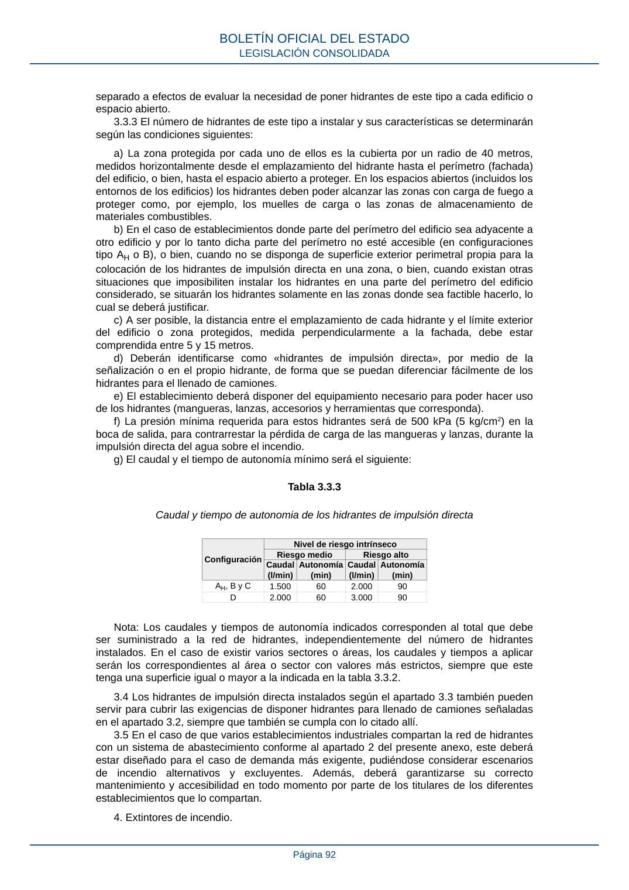

RSCIEI · Página 92 · versión 2025-04-10
SHA256: 85aa0af25d51e5b58d8975a4eefbf76d3f57a8933445cfe814ae9c4818a2e3e7 · página física 92 de 108 · métodos de encabezado
solo si están cotejados.
Formatos: Markdown · JSON de bloques · PDF p. 92 · imagen PNG
separado a efectos de evaluar la necesidad de poner hidrantes de este tipo a cada edificio o espacio abierto. 3.3.3 El número de hidrantes de este tipo a instalar y sus características se determinarán según las condiciones siguientes: a) La zona protegida por cada uno de ellos es la cubierta por un radio de 40 metros, medidos horizontalmente desde el emplazamiento del hidrante hasta el perímetro (fachada) del edificio, o bien, hasta el espacio abierto a proteger. En los espacios abiertos (incluidos los entornos de los edificios) los hidrantes deben poder alcanzar las zonas con carga de fuego a proteger como, por ejemplo, los muelles de carga o las zonas de almacenamiento de materiales combustibles. b) En el caso de establecimientos donde parte del perímetro del edificio sea adyacente a otro edificio y por lo tanto dicha parte del perímetro no esté accesible (en configuraciones tipo AH o B), o bien, cuando no se disponga de superficie exterior perimetral propia para la colocación de los hidrantes de impulsión directa en una zona, o bien, cuando existan otras situaciones que imposibiliten instalar los hidrantes en una parte del perímetro del edificio considerado, se situarán los hidrantes solamente en las zonas donde sea factible hacerlo, lo cual se deberá justificar. c) A ser posible, la distancia entre el emplazamiento de cada hidrante y el límite exterior del edificio o zona protegidos, medida perpendicularmente a la fachada, debe estar comprendida entre 5 y 15 metros. d) Deberán identificarse como «hidrantes de impulsión directa», por medio de la señalización o en el propio hidrante, de forma que se puedan diferenciar fácilmente de los hidrantes para el llenado de camiones. e) El establecimiento deberá disponer del equipamiento necesario para poder hacer uso de los hidrantes (mangueras, lanzas, accesorios y herramientas que corresponda). f) La presión mínima requerida para estos hidrantes será de 500 kPa (5 kg/cm2) en la boca de salida, para contrarrestar la pérdida de carga de las mangueras y lanzas, durante la impulsión directa del agua sobre el incendio. g) El caudal y el tiempo de autonomía mínimo será el siguiente: Tabla 3.3.3 Caudal y tiempo de autonomia de los hidrantes de impulsión directa Configuración Nivel de riesgo intrínseco Riesgo medio Riesgo alto Caudal (l/min) Autonomía (min) Caudal (l/min) Autonomía (min) AH, B y C 1.500 60 2.000 90 D 2.000 60 3.000 90 Nota: Los caudales y tiempos de autonomía indicados corresponden al total que debe ser suministrado a la red de hidrantes, independientemente del número de hidrantes instalados. En el caso de existir varios sectores o áreas, los caudales y tiempos a aplicar serán los correspondientes al área o sector con valores más estrictos, siempre que este tenga una superficie igual o mayor a la indicada en la tabla 3.3.2. 3.4 Los hidrantes de impulsión directa instalados según el apartado 3.3 también pueden servir para cubrir las exigencias de disponer hidrantes para llenado de camiones señaladas en el apartado 3.2, siempre que también se cumpla con lo citado allí. 3.5 En el caso de que varios establecimientos industriales compartan la red de hidrantes con un sistema de abastecimiento conforme al apartado 2 del presente anexo, este deberá estar diseñado para el caso de demanda más exigente, pudiéndose considerar escenarios de incendio alternativos y excluyentes. Además, deberá garantizarse su correcto mantenimiento y accesibilidad en todo momento por parte de los titulares de los diferentes establecimientos que lo compartan. 4. Extintores de incendio. BOLETÍN OFICIAL DEL ESTADO LEGISLACIÓN CONSOLIDADA Página 92
